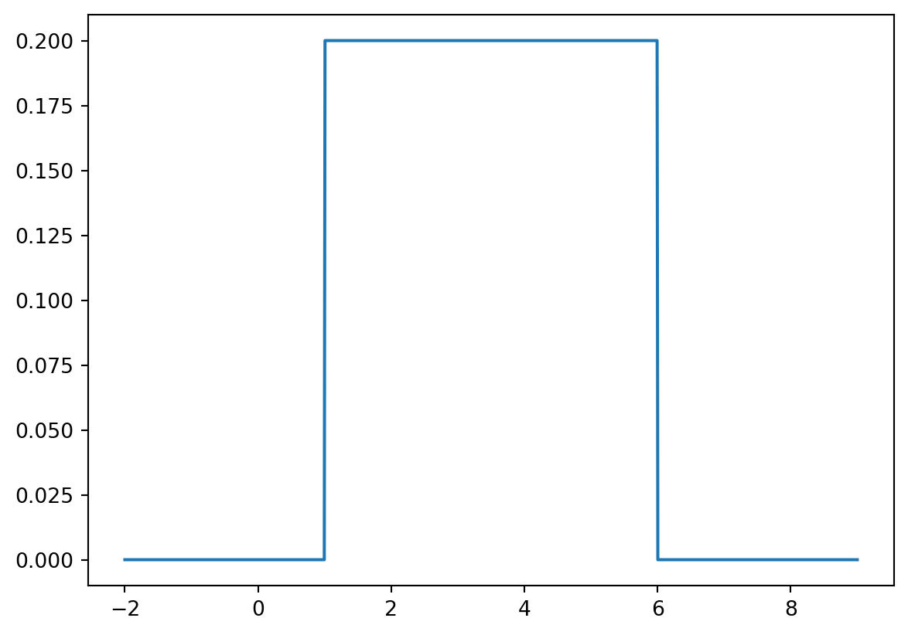
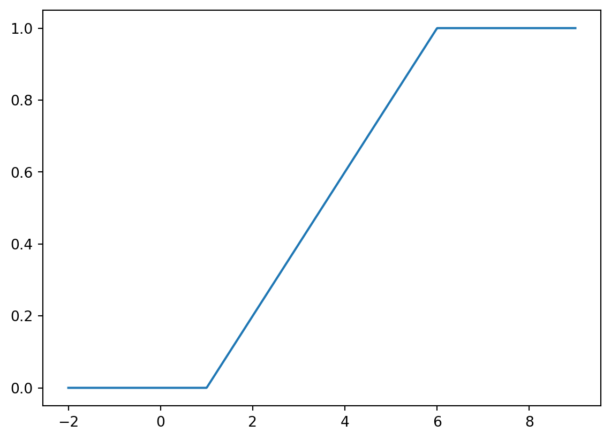
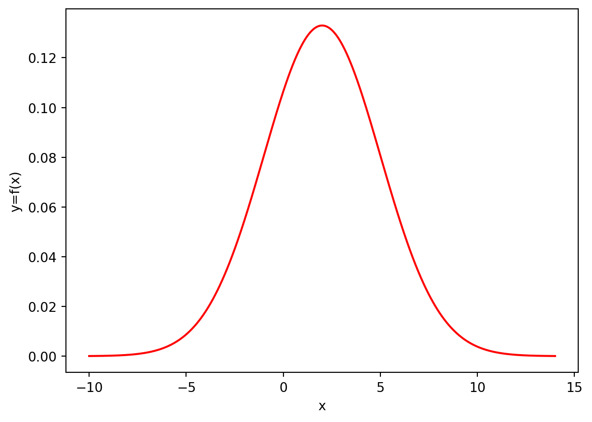
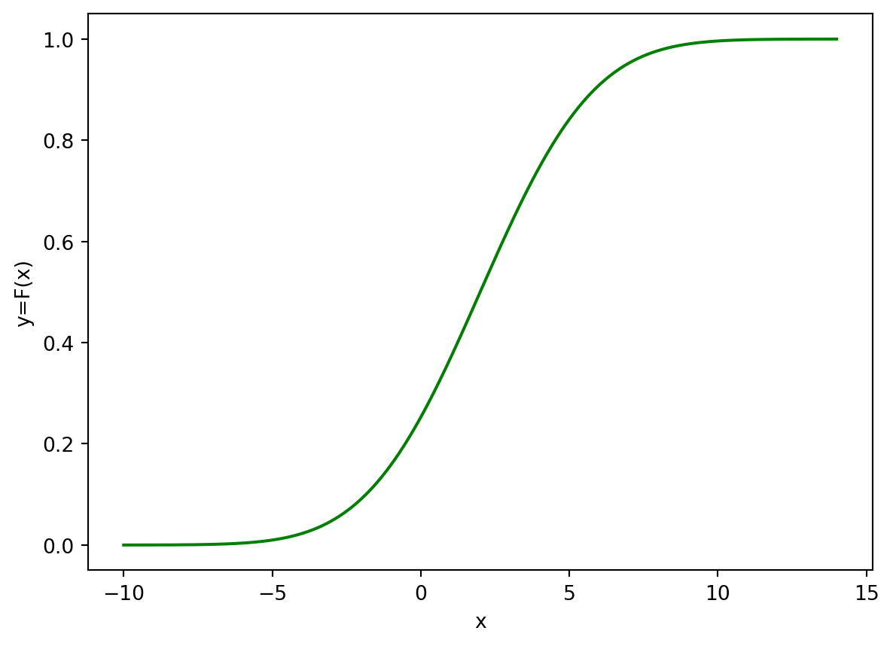

from scipy.stats import uniformLab 5 - Solutions
1 Uniform Distribution
Continuous probability distributions in Python can be treated similarly to the discrete distributions. For example, for the uniform distribution we start with
We know that a uniform random variables \(X\) depends on two parameters \(a\) and \(b\), namely, \(X\sim U(a,b)\) is distributed uniformly on a segment \([a,b]\). The length of this segment is \(b-a\). In Python, the uniform distribution also depends on two parameters: loc = a and scale = b - a. The default values (which are used if these parameters are omitted) are loc = 0 and scale = 1 that corresponds to \(U(0,1)\).
Probability Density Function
The PDF \(f_X(x)\) is then 1/scale on \([a,b]\) and \(0\) otherwise. For example, for \(X\sim(1,6)\), we can calculate
uniform.pdf(3, loc = 1, scale = 5)0.2that is \(\frac15\), whereas,
uniform.pdf(7, loc = 1, scale = 5)0.0as \(7\notin[1,6]\).
We can also plot the graph of the PDF for \(X\sim U(1,6)\), e.g. we plot it for \(x\in[-2,9]\):
import matplotlib.pyplot as plt
import numpy as np
x = np.linspace(-2, 9, 1000)
plt.plot(x, uniform.pdf(x, loc = 1, scale = 5))
plt.show()
Not that the jumps at \(x=1\) and \(x=6\) are shown by vertical segments.
Cumulative Distribution Function
Similarly, CDF \(F_X(x)\) of \(X\sim U(a,b)\) can be calculated by using the command uniform.cdf(x, loc = a, scale = b - a).
1.1
Plot the graph of \(F_X(x)\) for \(X\sim U(1,6)\) on the interval \([-2,9]\). Check the output:
Code
import matplotlib.pyplot as plt
import numpy as np
x = np.linspace(-2, 9, 1000)
plt.plot(x, uniform.cdf(x, loc = 1, scale = 5))
plt.show()
Generating Random Values
\(n\) values of the random variable \(X\sim U(a,b)\) can be generated using the command uniform.rvs(size = n, loc = a, scale = b - a). As we discussed on Lab 3, if we want to fix the output, we use the key random_state, for example, the following output
uniform.rvs(size = 3, loc = 1, scale = 5, random_state = 1)array([3.08511002, 4.60162247, 1.00057187])will be the same each time you run the code, whereas if you omit random_state = 1 the result will be different every time you run the code (try!)
1.2
Assign to variable x the array of \(10^6\) random values uniformly distributed on \([0,1]\), fix the random state equal to 123. Calculate the mean of \(x\). Check the output.
Code
x = uniform.rvs(size = 10 ** 6, random_state = 123) # Since loc = a = 0, scale = b-a = 1, we may omit their values
np.mean(x)0.49993343872814583As you can see the output is pretty close to \(0.5 = \frac{0+1}{2}=\mathbb{E}(X)\).
2 Exponential distribution
Recall that, for \(X\sim \mathrm{Exp}(\lambda)\), the PDF is
\[ f_X(x) = \begin{cases} \lambda e^{-\lambda x}, & \text{if } x \geq 0 \\ 0, & \text{otherwise}, \end{cases} \]
and the corresponding CDF is
\[ F_X(x) = \begin{cases} 1- e^{-\lambda x}, & \text{if } x \geq 0 \\ 0, & \text{otherwise}. \end{cases} \]
We know also that
\[ \mathbb{E}(X) = \frac1\lambda, \quad \mathrm{Var}(X) = \mathbb{E}(X^2)- \bigl(\mathbb{E}(X)\bigr)^2= \frac1{\lambda^2}. \]
In Python, we first load the corresponding class
from scipy.stats import exponNext, we use the same commands, e.g. expon.pdf, expon.cdf, expon.rvs, however, the key scale in this command is inverse to \(\lambda\): scale = 1/lambda.
For example, to calculate \(f_X(1)\) for \(X\sim \mathrm{Exp}(0.2)\), we use the command
expon.pdf(1, scale = 5)0.16374615061559636since \(1/0.2=5\). (Surely, you can also write scale = 1/0.2 in you code.)
2.1
Generate \(10^6\) values of the random variable \(X\sim \mathrm{Exp}(0.2)\), using the random_state key equal to 12. Calculate the variance of the generated values, using the formula
\[ \mathrm{Var}(X) = \mathbb{E}(X^2)- \bigl(\mathbb{E}(X)\bigr)^2 \]
Check the answer.
Code
x = expon.rvs(size = 10**6, scale = 1/0.2, random_state = 12)
np.mean(x ** 2) - (np.mean(x)) ** 225.04882818201701You can also np.var command. Check the output in this case:
Code
np.var(x)25.048828182017044The results are almost identical (there is always some numerical error). Moreover, the result is close to the theoretical value \(\frac1{0.2^2}=25\).
Percentiles
Another important function available for all random variables in scipy.stats module is ppf, which provides percentiles. By the definition, for a random variable \(X\) and for any \(q\in[0,1]\), the \(q\)-percentile of \(X\) is the number \(a\) such that
\[ F_X(a) = \mathbb{P}(X\leq a) = q. \]
In other words, the percentile is the inverse function to CDF.
For example, for \(X\sim \mathrm{Exp}(0.2)\),
a = expon.ppf(0.3, scale = 1/0.2)
a1.7833747196936622is \(0.3\)-percentile of \(X\), and then we can see that
expon.cdf(a, scale = 1/0.2)0.30000000000000004is effectively the initial \(0.3\).
2.2
Let \(X\sim \mathrm{Exp}(0.7)\). Find \(b\) such that
\[ \mathbb{P}(1 \leq X \leq b) = 0.4. \]
Hint: use first the formula
\[ \mathbb{P}(a \leq X \leq b) = F_X(b) - F_X(a). \]
Check the answer:
Code
# F(c) - F(1) = 0.4,
# then F(c) = F(1) + 0.4
q = expon.cdf(1, scale = 1/0.7) + 0.4
expon.ppf(q, scale = 1/0.7)3.33904097714544753 Normal Distribution
Recall that \(X\sim\mathcal{N}(\mu,\sigma^2)\) has the PDF given by
\[ f_X(x) = \frac{1}{\sqrt{2\pi}\sigma} e^{-\frac{(x-\mu)^2}{2\sigma^2}}. \]
We also know that
\[ \begin{aligned} \mathbb{E}(X)&=\mu,\\ \mathrm{Var}(X)&=\sigma^2. \end{aligned} \]
We start with
from scipy.stats import normThe PDF can be used in the code with the command norm.pdf(x, loc, scale) where loc stands for \(\mu\) and scale stands for \(\sigma\). Similarly, one can use norm.cdf(x, loc, scale), norm.ppf(q, loc, scale), and norm.rvs(loc, scale, size) as above. The default values are loc = 0 and scale = 1 that corresponds to the standard normal distribution \(Z\sim\mathcal{N}(0,1)\).
For example, the following code plots the graph of \(f_X(x)\) for \(X\sim \mathcal{N}(2,3^2)\) (on the interval \(x\in(-10,14)\) - for example). The graph is in red colour and the axes are properly labelled.
# Assuming that you previously loaded numpy and matplotlib
x = np.linspace(-10, 14, 1000)
y = norm.pdf(x, loc = 2, scale = 3)
plt.plot(x, y, color = 'red')
plt.xlabel('x')
plt.ylabel('y=f(x)')
plt.show()
3.1
Plot the graph of CDF for \(X\sim \mathcal{N}(2,3^2)\) (also on the interval \(x\in(-10,14)\)). Use green colour and label the axis with \(x\) and \(y=F(x)\).
Code
x = np.linspace(-10, 14, 1000)
y = norm.cdf(x, loc = 2, scale = 3)
plt.plot(x, y, color = 'green')
plt.xlabel('x')
plt.ylabel('y=F(x)')
plt.show()
3.2
Calculate the probability that a randomly selected individual has a height between \(160\) cm and \(170\) cm, given that the population mean height is \(165.5\) cm and the standard deviation is \(10.2\) cm, and that the heights follow the normal distribution.
Sub-task 1: calculate the answer using functions for general normal random variable \(X\sim \mathcal{N}(\mu,\sigma^2)\). Check the answer:
Code
norm.cdf(170, loc = 165.5, scale = 10.2) - norm.cdf(160, loc = 165.5, scale = 10.2)0.37558835807069463Sub-task 2: recalculate the answer using functions for standard normal random variable \(Z\sim \mathcal{N}(0,1)\). Check the answer:
Code
norm.cdf((170-165.5)/10.2) - norm.cdf((160-165.5)/10.2)0.375588358070694633.3
Let \(X\sim\mathcal{N}(12,5^2)\). Find \(c\) such that
\[ \mathbb{P}(c \leq X \leq 15) = 0.5. \]
Check the answer.
Code
# F(15) - F(c) = 0.5
# F(c) = F(15) - 0.5
q = norm.cdf(15, loc = 12, scale = 5) - 0.5
norm.ppf(q, loc = 12, scale = 5)8.2353648520551933.4
Generate \(10^6\) values of standard normal random variable. Check their standard deviation (use np.std function) and ensure that the result is close to \(1\).
Code
x = norm.rvs(size = 10 ** 6)
np.std(x)0.9993393936211346(you may get a different answer, as we didn’t fix random_state here).
If you have time
As you could see, we often need to calculate different functions for the same values of the parameters, e.g. in the example we considered earlier:
a = expon.ppf(0.3, scale = 1/0.2)
expon.cdf(a, scale = 1/0.2)0.30000000000000004In this case, we can also assign to a variable the distribution with needed values of parameters, and then use that variable with all methods of the distribution. E.g. the example above can be also rewritten
rv = expon(scale = 1/0.2)
a = rv.ppf(0.3)
rv.cdf(a)0.30000000000000004